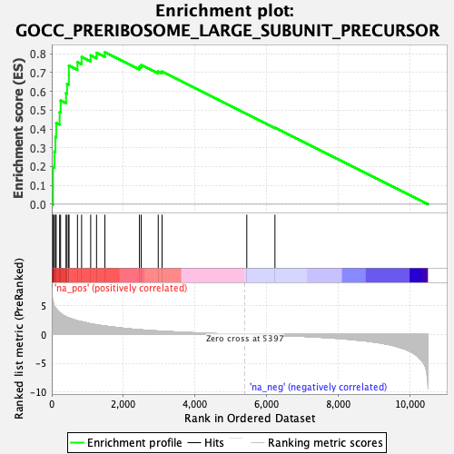
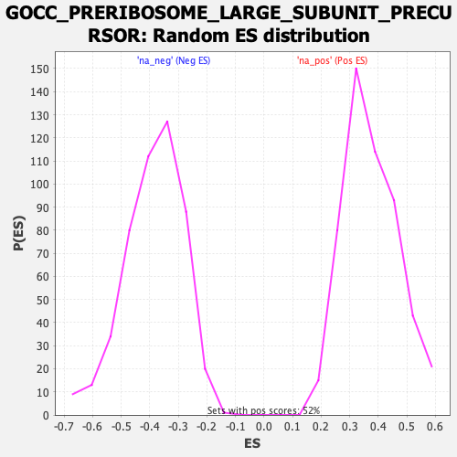

| Dataset | qlf.KOd4vsWTd4_gsea_score |
| Phenotype | NoPhenotypeAvailable |
| Upregulated in class | na_pos |
| GeneSet | GOCC_PRERIBOSOME_LARGE_SUBUNIT_PRECURSOR |
| Enrichment Score (ES) | 0.8082789 |
| Normalized Enrichment Score (NES) | 2.1667132 |
| Nominal p-value | 0.0 |
| FDR q-value | 0.0 |
| FWER p-Value | 0.0 |

| SYMBOL | RANK IN GENE LIST | RANK METRIC SCORE | RUNNING ES | CORE ENRICHMENT | |
|---|---|---|---|---|---|
| 1 | NIP7 | 34 | 5.754 | 0.0971 | Yes |
| 2 | PPAN | 35 | 5.748 | 0.1974 | Yes |
| 3 | MRTO4 | 74 | 4.911 | 0.2794 | Yes |
| 4 | WDR74 | 101 | 4.591 | 0.3570 | Yes |
| 5 | FTSJ3 | 124 | 4.436 | 0.4323 | Yes |
| 6 | RRP1B | 220 | 3.809 | 0.4897 | Yes |
| 7 | RRP15 | 247 | 3.667 | 0.5512 | Yes |
| 8 | LAS1L | 398 | 3.082 | 0.5906 | Yes |
| 9 | EBNA1BP2 | 428 | 3.003 | 0.6402 | Yes |
| 10 | PES1 | 477 | 2.894 | 0.6861 | Yes |
| 11 | BOP1 | 478 | 2.892 | 0.7366 | Yes |
| 12 | MDN1 | 718 | 2.381 | 0.7553 | Yes |
| 13 | EIF6 | 834 | 2.215 | 0.7830 | Yes |
| 14 | RRS1 | 1087 | 1.849 | 0.7912 | Yes |
| 15 | MAK16 | 1251 | 1.677 | 0.8049 | Yes |
| 16 | WDR12 | 1485 | 1.467 | 0.8083 | Yes |
| 17 | NOC2L | 2449 | 0.833 | 0.7310 | No |
| 18 | RPF1 | 2499 | 0.800 | 0.7403 | No |
| 19 | NSA2 | 2974 | 0.604 | 0.7056 | No |
| 20 | RRP1 | 3081 | 0.568 | 0.7054 | No |
| 21 | WDR37 | 5448 | -0.007 | 0.4799 | No |
| 22 | FBXW9 | 6235 | -0.142 | 0.4075 | No |
